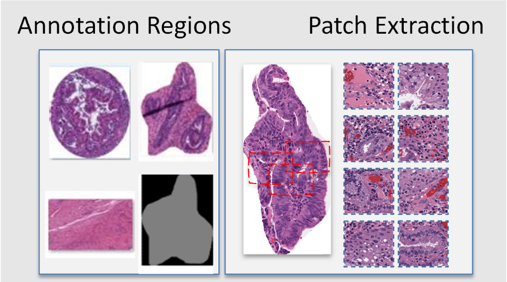

Patch Extraction
WSI.patch module
Title: ValidPath Toolbox - patch extraction module
Description: This is the patch extraction module for the ValidPath toolbox. It is includes two classes and several methods
Classes: WSIpatch_extractor, PatchExtractor
Methods: There are two methods in the patch extraction module as follows:
PatchExtractor.gen_patch(INPUTDIR: str, PatchSize: tuple, Number_of_Patches: int, intensity_check: boolean, OUTPUTDIR:str)
WSIpatch_extractor.patch_extraction(wsi_obj: object, PatchSize: tuple, OUTPUTDIR:str, Random: boolean, Visualize: boolean, Intensity_check: boolean, Number_of_Patches: (int)
- class WSI.patch.PatchExtractor[source]
Bases:
object- gen_patch(INPUTDIR, PatchSize, Number_of_Patches, intensity_check, intensity_threshold, OUTPUTDIR)[source]
This function extracts a number of pactches from extracted annotations. It can save the extracted annottions to the output directory as defined in inputs. Before running this function, please call annotation.ann_extractor.extract_ann(save_dir, XMLs, WSIs) to generate annotations. The output directory will be generated based on the strucutr of the input directories. IF the WSI Magnification is 13X or 20X, this code will automaticall convert to 20X.
- Parameters
- INPUTDIRstring
the path to the input directory
- PatchSizetuple
the size of image patches to be extracted
- Number_of_Patchesint
the number of patches per annotation to be extracted
- intensity_checkboolean
to filter the image patches and eliminate empty ones
OUTPUTDIR : string the path to the output directory to save image patches
- Returns
Image – extracted image patches from the annotated area.
- class WSI.patch.WSIpatch_extractor[source]
Bases:
object- patch_extraction(patch_size, output_folder, random_state, visualize, intensity_check, intensity_threshold, std_threshold, patch_number=-1)[source]
this function Generate object for tiles using the DeepZoomGenerator and divided the svs file into tiles of size 256 with no overlap. then processing and saving each tile to local directory.
- Parameters
- wsi_objobject
an object containing WSI file and its information
- patch_size: integer
the size of image patches to be extracted
- output_folderstring
the path to the output directory to save image patches
- random_stateboolean
extract patches randomly or in order
- visualize: boolean
either to plot extracted patches or not
- intensity_check: boolean
to filter the image patches and eliminate empty ones
- intensity_threshold: integer
the threshold to include image patches
- std_threshold: integer
the standard deviation threhold to include image patches
- patch_numberboolean
the number of patches to be extracted. Set to ‘-1’ to extract all possible image patches
- patch_extraction_with_normalized_tiles(patch_size, output_folder, random_state=True, patch_number=-1)[source]
this function Generate object for tiles using the DeepZoomGenerator and divided the svs file into tiles of size 256 with no overlap. then processing and saving each tile to local directory.
- Parameters
- wsi_objobject
WSI object.
- patch_size: integer
size tiles
- output_folderstring
path root folder to save tiles
perform_segmentation_state: boolean random_state : boolean
About this module
This demonstration guides you through the process of using ValidPath to extract patches within annotations. This feature enabled using the patch_extraction method.
{kind=link}
Loading Required Packages
This step involves importing various Python modules that are needed for our analysis.
import os
from WSI.readwsi import WSIReader
from WSI.patch import WSIpatch_extractor
from WSI.patch import PatchExtractor
import matplotlib.pyplot as plt
Patch Extraction from Annotated Area
In this section, we show you how to extract image patches from the annotations which are already extracted. We do this by using ValidPath’s PatchExtractor class. This step should be run after extracting the annotated area of the WSI. If you haven’t extracted the annotations, in order to extract the image patches. please follow the steps in this Notebook github.com/DIDSR/wsi_processing_toolbox/02_annotation_extraction.ipynb. After extracting the annotations, you can call the gen_patch method from the annotation.patch_extractor class to extract image patches. Please make sure that you imported the PatchExtractor class using “from annotation.patch_extractor import PatchExtractor”. Please run the following code to generate image patches from the annotated area.
let’s call the method and extract annotations. This can be done using the following code (please modify the variables as needed):
PatchExtractor = PatchExtractor()
INPUTDIR = 'C:/DATA/0_Washu-Aperio/input_output/'
PatchSize = (255,255)
Number_of_Patches = 10
OUTPUTDIR = 'C:/DATA/0_Washu-Aperio/out_dir/'
intensity_check = True
intensity_threshold = 250
PatchExtractor.gen_patch(INPUTDIR,PatchSize,Number_of_Patches,intensity_check,intensity_threshold,OUTPUTDIR)
Extracted annotations are based on defined inputs. For example, you can specify the number of patches you would like to extract from each annotation. You may also set ‘intensity_check’ to ‘True’ if you would like to filter the generated image patches. When ‘intensity_check’ is set to ‘True,’ only patches from annotated regions with at least three corners having high intensity (e.g., intensity higher than 240) will be extracted.
Note: the size of the annotation should be at least two times larger than the patch size.
Patch Extraction from the entire WSI
In this section, we will demonstrate how to load a WSI and extract image patches from the entire WSI. This step can be done independently without the need to extract annotations since we will work directly with WSI. Please make sure that you imported the WSIpatch_extractor class using ” from WSI.readwsi import WSIpatch_extractor”. We extract image patches by using patch_extraction method of the WSIpatch_extractor class:
Since this method extract image patches from the entire WSI (not annotated regions), we need to call the wsi_reader to read a WSI. Therefore, we need to load a WSI and create the WSI object. This is enabled using the wsi_reader method in the ReadWsi package. For this, we will set up a directory which contains our WSI files, we will create a list in Python and append WSI names in this list and load the WSI using the wsi_reader using an index.
dir_file = “C:\DATA\0_Washu-Aperio”
file_name = “aperio-002-0.svs”
path = dir_file + "\\" + file_name
if os.path.exists(path):
wsi_obj =WSI.wsi_reader(path)
break
else:
print("File path error!" )
print(" Done...")
After reading the WSI using the wsi_reader, we have an object which has the loaded WSI. To validate if the object is loaded correctly, we print the object and also print the available pyramid levels of the WSI using the “.level_dimensions” method.
print(wsi_obj)
print(wsi_obj.level_dimensions)
To see a thumbnail of the WSI, we use the get_thumbnail method of wsi_reader. We load the thumbnail as follows:
for example: size_ = (600,300)
tile= wsi_obj.get_thumbnail(size=size_)
plt.imshow(tile)
plt.title("WSI thumbnail")
Now we can call the patch_extraction method of the WSIpatch_extractor class to extract image patches. You can use the following code to call this methos.
patchsize = 256
output_directory = "C:/DATA/0_Washu-Aperio/out_dir/"
random= False
visualize = True
intensity_check = False
num_patches = 10 # set to -1 to extract all patches
intensity_threshold = 250
std_threshold = 15
WSIpatch_extractor.patch_extraction(wsi_obj,patchsize,output_directory,random,visualize,intensity_check,intensity_threshold,std_threshold,num_patches)